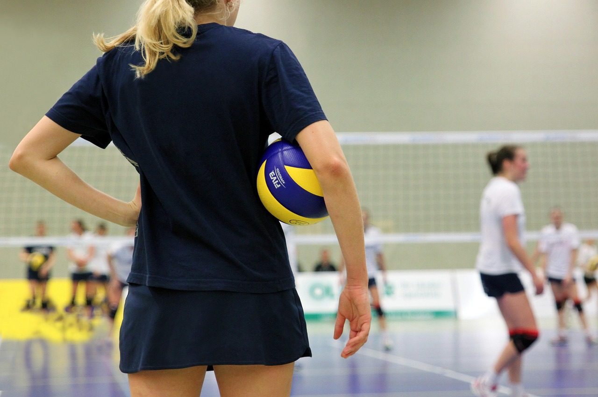

Como funciona/o básico
Uma partida contém no total 12 participantes, sendo 6 pessoas em cada time. Cada time pode tocar no bola até três vezes antes de lancá-la para o outro lado. Não se é permitido segurar a bola, apenas toque, e a bola pode encotar em qualquer parte do corpo, exceto durante o saque, depedendo da regra do jogo.
Agora um pouco mais avançado
- Saque por cima: Você se posiciona, joga a bola para cima com uma das mãos e bate com a palma da mão livre
- Atque/corte: Corrida de 2 ou 3 passos antes do salto, Braço de ataque bem armado (cotovelo alto), Contato com a bola no ponto mais alto.
- Bloqueio: Posição: na rede, com braços levantados, Salto vertical, braços estendidos, Tente “fechar” o ângulo do ataque adversário.